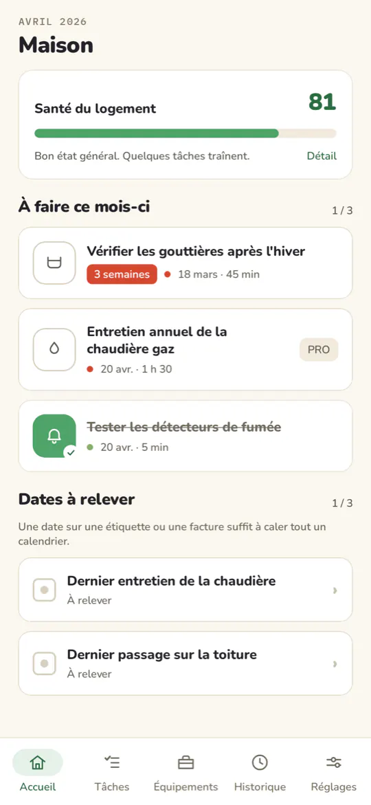
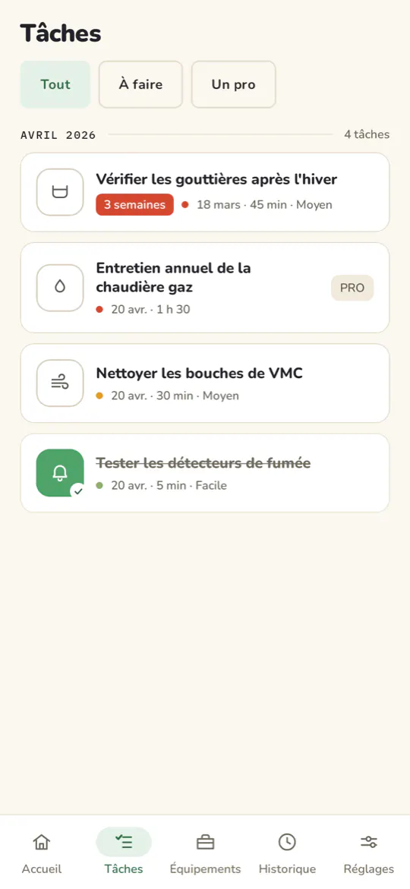
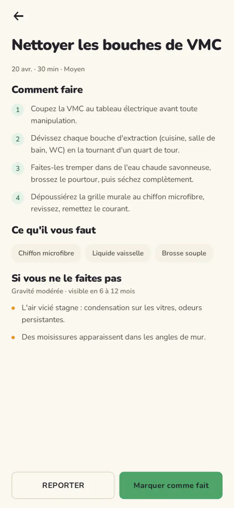
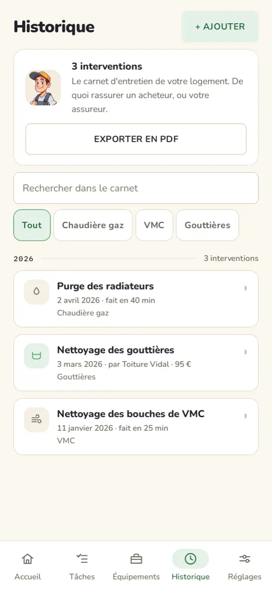
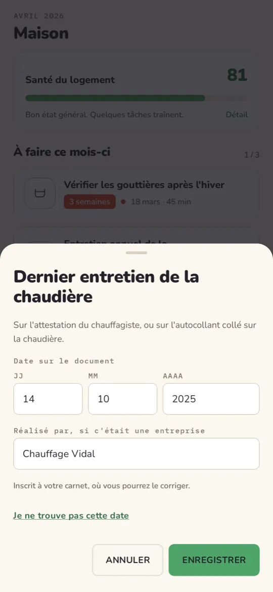

Almanac
Ce qu'il faut entretenir chez vous, quand, et comment.

Ce que ça change
-
Plus rien à retenir
Almanac connaît les fréquences ; vous ouvrez l'app quand elle vous le dit.
-
Des fiches concrètes
Chaque tâche explique les étapes, les outils, la durée, et ce qui arrive si vous la reportez.
-
Un carnet d'entretien exportable en PDF
De quoi rassurer un acheteur, un assureur, ou vous-même dans trois ans.
-
Une note de santé du logement
Pour voir d'un coup d'œil où vous en êtes.
Comment ça marche
Vous déclarez ce que vous avez : chaudière, VMC, détecteurs de fumée, gouttières.
Almanac construit votre calendrier et vous prévient au bon moment.
Chaque tâche cochée s'inscrit dans le carnet, que vous exportez quand il le faut.
Captures d'écran




Vos données
Il n'existe aucun serveur Almanac, aucun compte, aucune inscription, et le code de l'application n'effectue aucun appel réseau. Votre carnet reste sur votre téléphone, à une exception près : la sauvegarde automatique d'Android en place une copie chiffrée sur votre espace Google, pour que vous le retrouviez si vous changez d'appareil. Vous pouvez la couper.
Il n'y a ni publicité, ni analytics, ni traceur publicitaire, ni outil de rapport de plantage dans cette application.
Les autorisations demandées
- Notifications : les rappels d'échéance. Refusez-la et l'application fonctionne, sans rappel.
- Démarrage de l'appareil : reprogrammer vos rappels après un redémarrage, sinon ils seraient perdus.
- Internet, état du réseau : apportées par les bibliothèques Google Play (dons, avis), pas par le code d'Almanac.
Ce qui est payant
Toutes les fiches d'entretien et tous les rappels sont gratuits. Les couleurs de saison et le choix de l'icône forment une option : un achat, une fois. Un don est possible si l'app vous rend service ; le paiement est traité par Google Play, pas par Almanac.
Questions
Almanac remplace-t-il les contrôles obligatoires ?
Non. Almanac vous aide à suivre l'entretien courant. Il ne remplace pas les contrôles obligatoires ni l'avis d'un professionnel : vérifiez les obligations qui s'appliquent à votre logement.
Que se passe-t-il si je change de téléphone ?
Réinstaller Almanac vous rend vos équipements et votre carnet : c'est la sauvegarde d'Android, qui en garde une copie chiffrée sur votre compte Google. Vous pouvez la couper dans les réglages d'Android, pour tout l'appareil ou pour Almanac seul.
Une tâche revient trop souvent ?
Vous pouvez la mettre en sourdine, pour quelques mois ou pour de bon : elle quitte la liste sans compter comme faite, et votre note ne la compte ni en bien ni en mal. Une tâche mise en sourdine jusqu'à une date revient d'elle-même le jour dit.
Puis-je consigner ce qui a été fait avant Almanac ?
Oui. Un ramonage, un entretien de chaudière, une facture retrouvée : vous l'inscrivez au carnet, et ça compte dans le carnet du logement.
Almanac fonctionne-t-il sans connexion ?
Oui. Le code de l'application n'effectue aucun appel réseau : les fiches, le calendrier et le carnet sont sur le téléphone. Seuls les dons et les avis passent par Google Play.